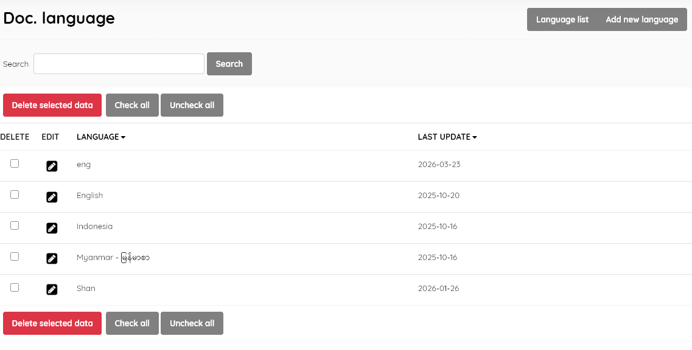
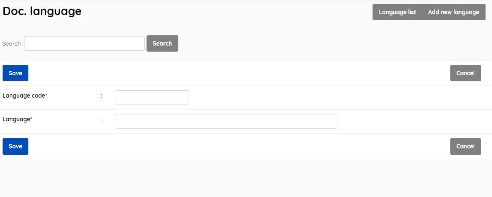

Catalogued resources can be tagged to indicate the main language used. This lookup table holds data on the possible languages
This enables management of the document language master file. It displays the list of all languages available for selection when entering data about a document’s language in the SLiMS database , with data for:
Language (name of the language)
Last update (when the record was last edited)

This section is provided with facilities to DELETE and EDIT language data.
To edit an item , double-click on the language name , or single-click on the pencil (edit) icon.
A search function allows you to search for entries by keywords.
Results can be sorted by clicking on the field name at the top of each column.
This provides the facility to add new document languages directly to the Senayan system.
You must allocate a language code as well as the name of the language. The language code should be the ISO 639-2 or 3 code for the language you enter. These codes are detailed at : https://www.iso.org/iso-639-language-codes.html There is a more limited Library of Congress authority list at: https://www.loc.gov/marc/languages/language_code.html , which will ensure MARC compatibility.

Notes:
SLiMS does not translate master-file entries. So, while you should adhere to the language CODE (as advised above), you may enter a language name in translated form to meet user needs.
A document language must be selected first, and after clicking the DELETE SELECTED DATA button a requester will appear, asking for confirmation.
If the document language is in use in any existing catalogue records, it cannot be deleted, and a notification will appear.